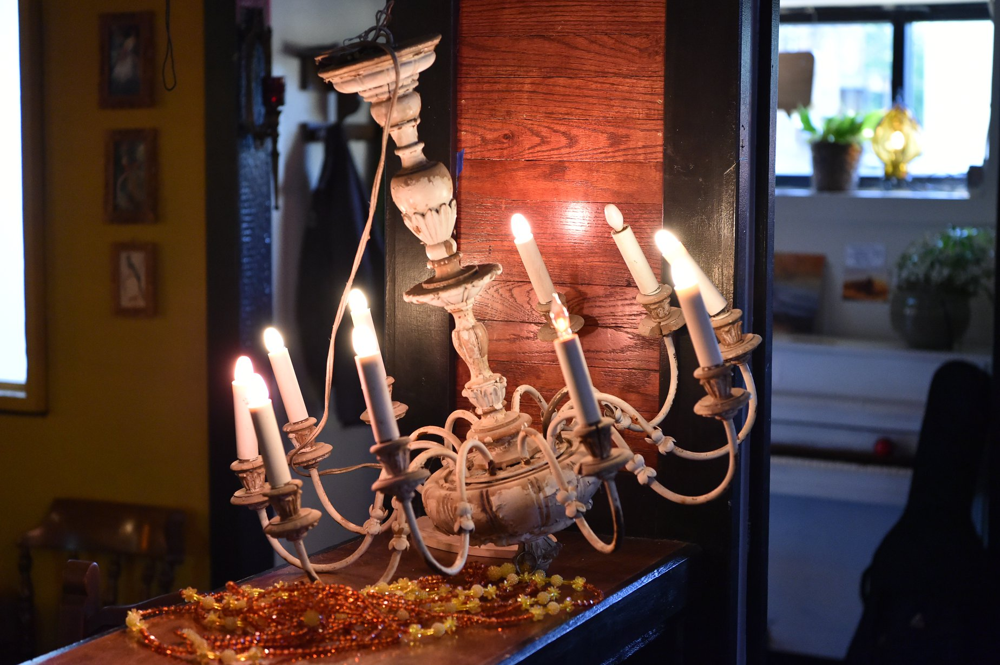

The notion of a Public House or a “third place” is that of a gathering spot distinct from work life and home. It is a place where individuals from different backgrounds can discuss ideas, form new friendships, and strengthen old friendships. A Public House is easily accessed, has affordable fare, and a positive spirit. The spirit of community.
Stop by for the evolution of this small business in the small town of Tonganoxie.
Helping the downtown of our small town thrive is the passion behind this project. Owning a pub is the happy byproduct of this passion. Seeing the vacant building was bothersome, so after some encouragement and hours of volunteer support by friends and family, Ryan’s Public House opened on March 17, 2018.
Helping the downtown of our small town thrive is the passion behind this project. Owning a pub is the happy byproduct of this passion. Seeing the vacant building was bothersome, so after some encouragement and hours of volunteer support by friends and family, Ryan’s Public House opened on March 17, 2018.
This text is here to make the facebook display larger Events